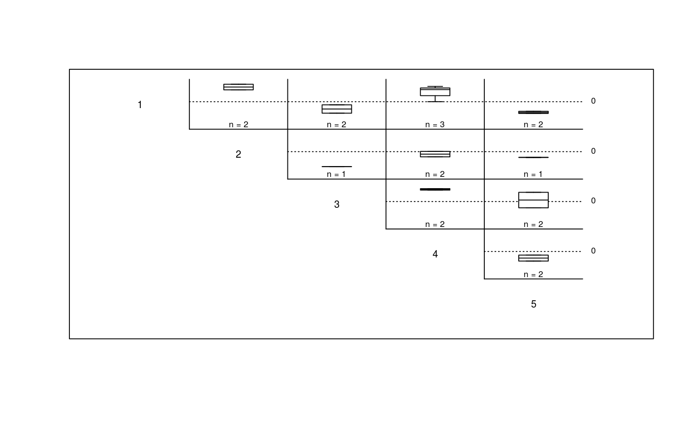
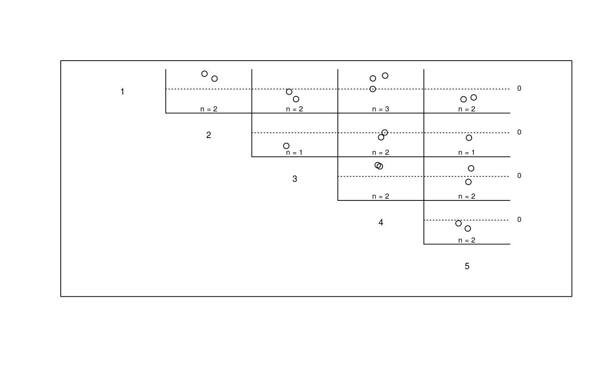

Plot Upstream Distance Between Observations of All Individuals
Produces a matrix of plots (boxplots are default), with plot [i,j] giving the
distribution of upstream distances from observation i to observation
j, for all individuals.
plotmatbysurveylist(matbysurveylist, type = "boxplot", showN = TRUE, ...)
Arguments
| matbysurveylist | A list of distance matrices returned from matbysurveylist. |
|---|---|
| type | If |
| showN | Whether to display the sample size for each cell. Defaults to TRUE. |
| ... | Additional plotting arguments. |
Note
Building routes from the river mouth to each river network segment and/or distance lookup tables will greatly reduce computation time (see buildsegroutes).
See also
Examples
data(Gulk, smallset) matbysurveylist <- matbysurveylist(unique=smallset$id, survey=smallset$flight, seg=smallset$seg, vert=smallset$vert, rivers=Gulk) plotmatbysurveylist(matbysurveylist)plotmatbysurveylist(matbysurveylist,type="confint")plotmatbysurveylist(matbysurveylist,type="dotplot")data(fakefish) # matbysurveylist <- matbysurveylist(unique=fakefish$fish.id, survey=fakefish$flight, # seg=fakefish$seg, vert=fakefish$vert, rivers=Gulk) # plotmatbysurveylist(matbysurveylist)